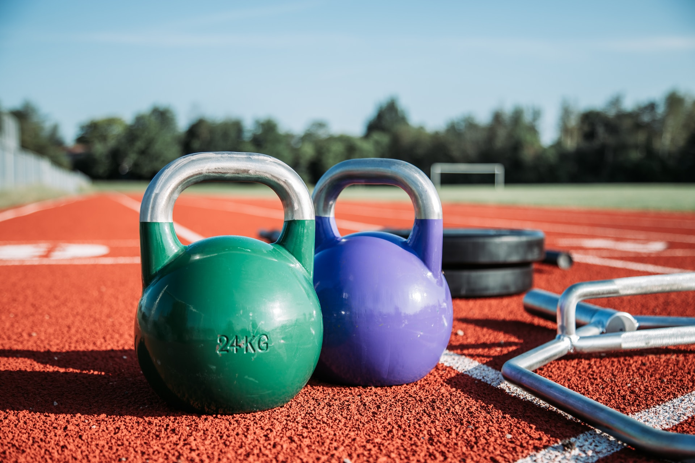
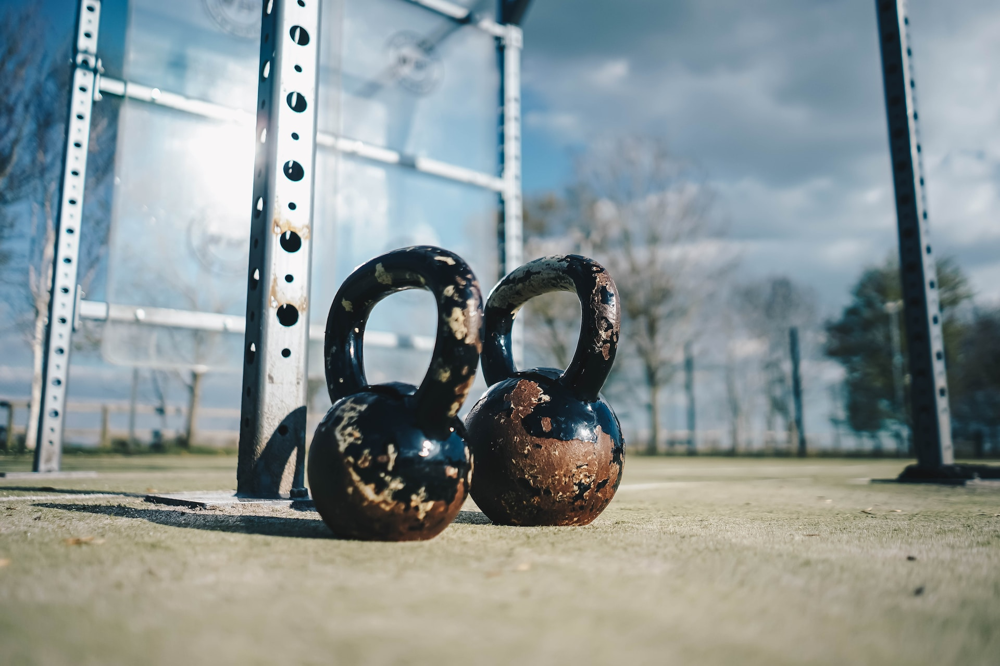
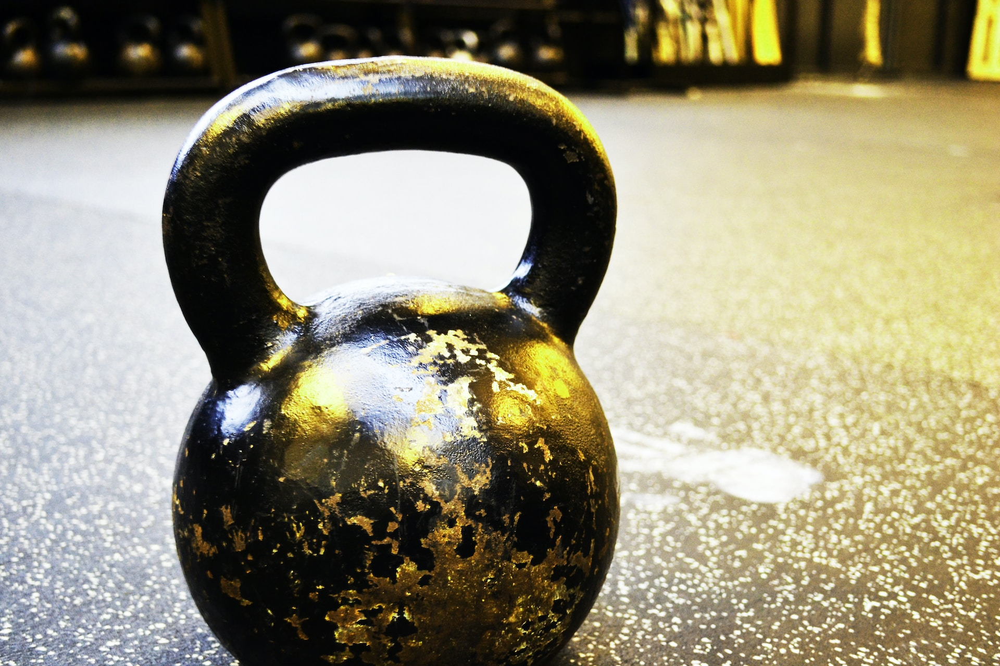

KETTLEBELLS DE COMPETICION
Una kettlebell es una pesa con forma de bola y un asa. La principal diferencia en una Kettlebell de competición (o PRO GRADE) es el tamaño estandarizado de la pesa: todas tienen las mismas dimensiones independientemente del peso. De esta manera siempre se sujetara, y apoyara la pesa en el brazo de la misma forma. En contraposición, una Kettlebell Ironcast tradicional al tener diferentes dimensiones por peso, necesitarán adaptaciones en su uso.

KETTLEBELLS IRON CAST
Las pesas rusas iron cast en su mejor versión y como su nombre indica, son pesas fabricadas en hierro, y depende de la fábrica pueden hacerse mediante la unión de piezas o en una única pieza. En este caso, la forma de la kettlebell y el mango van a ir variando en la medida que cambiamos de peso, de tal forma que tendremos que ir adaptando nuestro cuerpo y ajustando el equilibrio para lograr una buena técnica.
 